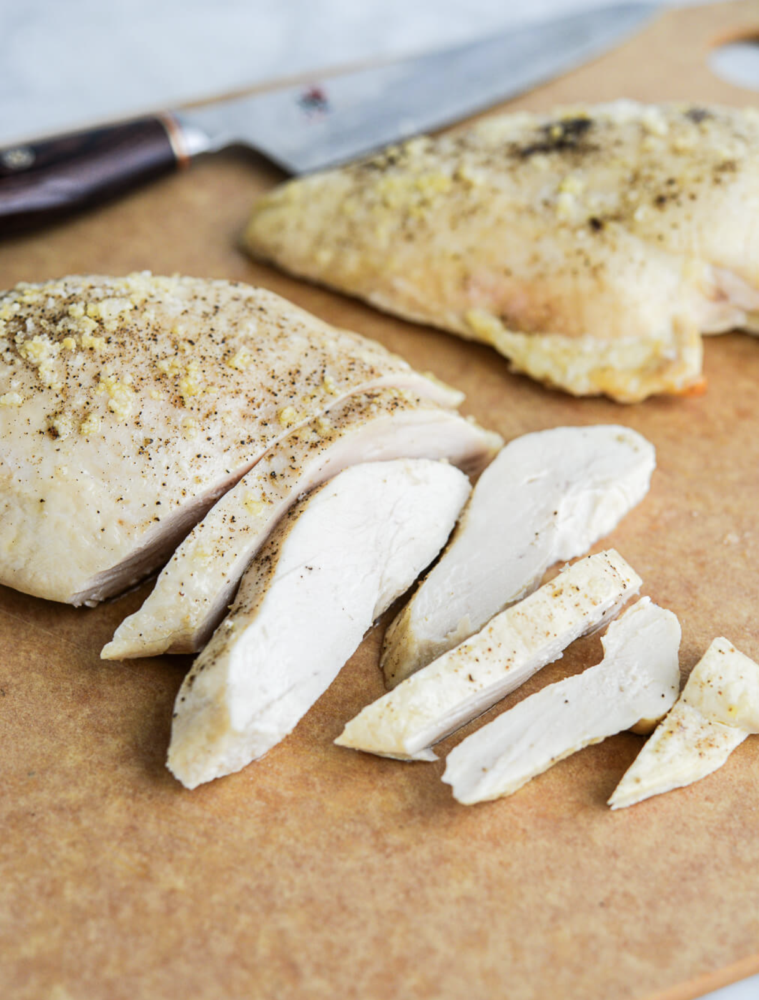

Chicken Recipe

Description
This reipe has been hand-crafted by Kevin himself to bring out the most flavor.
This is a meal Kevin survived off of during his formative years.
Ingredients
- Chicken
- Extra Virgin Olive Oil
- Salt
- Pepper
- Baking Tray
Steps
- Pre-heat oven to 400 degrees Farenheight
- Place raw unfrozen chicken on to baking tray (use foil for easy clean up)
- Drizzle EVOO over the chicken and ensure it is evenly coated above and below
- Liberaly season chicken with salt and pepper